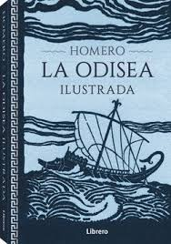

En esta sección encontrarás reseñas de varios libros.
Ya sea que seas un lector empedernido o estés buscando tu próxima lectura, aquí compartimos nuestras impresiones sobre obras que vale la pena leer.
Explora cada reseña, mira la portada y accede a más información para saber si ese libro es el indicado para ti.
TODO SE PUEDE ENTRENAR
9 de Abril 2015 | Autoayuda, Desarrollo personal
Autor: Toni Nadal
Sinopsis
En Todo se puede entrenar, Toni Nadal —tío y exentrenador de Rafael Nadal— comparte su filosofía sobre el esfuerzo, la disciplina y la formación del carácter
como claves del éxito, tanto en el deporte como en la vida. A través de su experiencia al lado de uno de los tenistas más grandes de todos los tiempos, el
autor reflexiona sobre la importancia de la exigencia, la humildad, la gestión emocional y la responsabilidad personal.
El libro combina anécdotas personales con ideas claras sobre educación y entrenamiento mental, defendiendo que los valores son más importantes que el talento,
y que cualquier habilidad, incluida la fortaleza mental, puede y debe entrenarse. Su estilo es directo, honesto y práctico, lo que hace que el mensaje llegue
tanto a deportistas como a padres, entrenadores y lectores que buscan superarse.
Crítica
Toni Nadal entrega en este libro un mensaje poderoso: la voluntad, la disciplina y la actitud son más determinantes que el talento. La obra destaca por su
enfoque directo y sin adornos, reflejo del estilo con el que formó a Rafael Nadal no solo como campeón, sino como persona.Uno de sus principales aciertos es
su defensa firme de los valores tradicionales: la exigencia, el esfuerzo constante, la humildad, y el respeto. En tiempos donde se sobrevalora el talento
inmediato y la comodidad, su postura es refrescante y necesaria. Además, el uso de anécdotas reales aporta autenticidad y credibilidad.Sin embargo, para
algunos lectores, su visión puede parecer excesivamente rígida o poco adaptable a otros contextos menos competitivos. También se percibe cierta repetición de
ideas, y una falta de desarrollo teórico profundo en algunos temas. Aun así, Todo se puede entrenar es un libro valioso que va más allá del deporte: es un
llamado a recuperar la cultura del esfuerzo y entender que la mentalidad también se entrena. Es ideal para entrenadores, padres, educadores y cualquier persona
comprometida con formar carácter y no solo habilidades.
Compralo aquí
DON QUIJOTE DE LA MANCHA

1605 | Novela, Farsa, Sátira, Ficción de aventuras
Autor: Miguel de Cervantes
Sinopsis
Don Quijote de la Mancha es una de las obras más importantes de la literatura universal, escrita por Miguel de Cervantes y publicada en dos partes
(1605 y 1615). Narra las aventuras de Alonso Quijano, un hidalgo que, enloquecido por leer libros de caballería, decide convertirse en caballero andante
bajo el nombre de Don Quijote. Acompañado de su fiel escudero, Sancho Panza, recorre los campos de España en busca de justicia, gloria y aventuras,
enfrentando molinos que cree gigantes y viviendo una mezcla de locura y nobleza.
La novela es una sátira de los libros de caballería, pero también una profunda reflexión sobre la realidad y la imaginación, la libertad, la identidad y el
valor del idealismo en un mundo que no siempre lo entiende. Su riqueza de personajes, humor, lenguaje y profundidad filosófica la convierten en una lectura
indispensable.
Crítica
Don Quijote es una obra revolucionaria que cambió para siempre la forma de escribir novelas. Cervantes logra una mezcla única de humor, crítica social y
profundidad emocional. La relación entre Don Quijote y Sancho Panza es uno de los grandes logros literarios: simbólica, entrañable y llena de contrastes. Uno
de los mayores méritos del libro es su capacidad para funcionar en múltiples niveles: como parodia, como drama humano y como reflexión sobre el poder de las
ideas. Sin embargo, su lectura puede resultar difícil para algunos lectores modernos por el lenguaje antiguo y su estructura extensa. La segunda parte, aunque
más compleja y profunda, también exige más atención que la primera. A pesar de eso, Don Quijote es una obra viva, actual y universal. Sus temas —la lucha
contra la mediocridad, el valor de soñar, el conflicto entre lo que somos y lo que queremos ser— siguen resonando. Es un libro que invita a reír, pensar y
volver a creer en la nobleza de los ideales.
Compralo aquí
LA ODISEA

Siglo VIII | Epopeya, Épico
Autor: Homero
Sinopsis
La Odisea es una de las epopeyas más importantes de la literatura clásica, atribuida a Homero. Narra el largo y peligroso viaje de Ulises (Odiseo) de regreso
a Ítaca tras la guerra de Troya. Durante diez años, enfrenta monstruos, dioses, hechiceras, tormentas y tentaciones, mientras su esposa Penélope y su hijo
Telémaco lo esperan, rodeados de pretendientes que desean quedarse con su trono. La obra combina aventura, drama y reflexión, presentando temas como la astucia,
la fidelidad, el heroísmo, la lucha por el hogar y la relación entre hombres y dioses. Con un estilo poético y simbólico, La Odisea ha influido en la
narrativa occidental durante siglos y sigue siendo leída y estudiada en todo el mundo.
Crítica
La Odisea es una obra maestra que destaca por su estructura narrativa avanzada y su profundidad temática. Ulises no es solo un guerrero, sino un personaje
complejo, astuto y humano. La obra brilla por su equilibrio entre lo fantástico y lo real, y por cómo explora emociones universales como el amor, el miedo,
el deseo de pertenecer y la lucha por volver a casa. Sin embargo, algunos pasajes pueden resultar lentos o repetitivos para el lector moderno, debido a su
estilo oral y la repetición de fórmulas típicas de la poesía épica. Aun así, estos elementos forman parte de su riqueza cultural e histórica. En resumen,
La Odisea es mucho más que una historia de aventuras: es una reflexión profunda sobre el ser humano, el destino y la perseverancia. Un texto inmortal que ha
trascendido los siglos y sigue inspirando a generaciones.
Compralo aquí
LA TIERRA PROMETIDA
17 de Noviembre 2020 | Autobiografía
Autor: Barack Obama
Sinopsis
La tierra prometida es el primer volumen de las memorias presidenciales de Barack Obama, publicado en 2020. En este libro, el expresidente de Estados Unidos
relata su camino desde la juventud hasta su primer mandato en la Casa Blanca. Describe su vida personal, sus motivaciones, su campaña electoral y los
principales desafíos políticos que enfrentó, incluyendo la crisis financiera de 2008, la reforma del sistema de salud y las relaciones internacionales. El
estilo es reflexivo, cercano y detallado, con momentos de introspección y honestidad. Obama no solo narra hechos, sino que también analiza el impacto de sus
decisiones y muestra el lado humano de la política, hablando de sus dudas, frustraciones y aprendizajes. La obra combina política, historia y experiencia
personal, ofreciendo una mirada profunda al funcionamiento del poder en una de las democracias más influyentes del mundo.
Crítica
El libro destaca por su claridad narrativa y profundidad intelectual. Obama escribe con elegancia y precisión, demostrando su habilidad como comunicador.
Uno de sus mayores aciertos es la capacidad de explicar temas complejos —como la política exterior o el sistema legislativo— de forma accesible, sin perder
rigor. Además, su tono autocrítico y sincero lo aleja de la típica autobiografía política idealizada. Sin embargo, su extensión (más de 700 páginas) y nivel
de detalle pueden resultar excesivos para lectores que buscan un enfoque más directo o anecdótico. En ciertos pasajes, la narrativa se vuelve densa,
especialmente para quienes no están familiarizados con la política estadounidense. A pesar de eso, La tierra prometida es una obra valiosa tanto para
interesados en política como para quienes buscan entender los desafíos del liderazgo desde dentro. Más que un relato de poder, es una reflexión sobre
ideales, democracia y el compromiso con un futuro mejor.
Compralo aquí